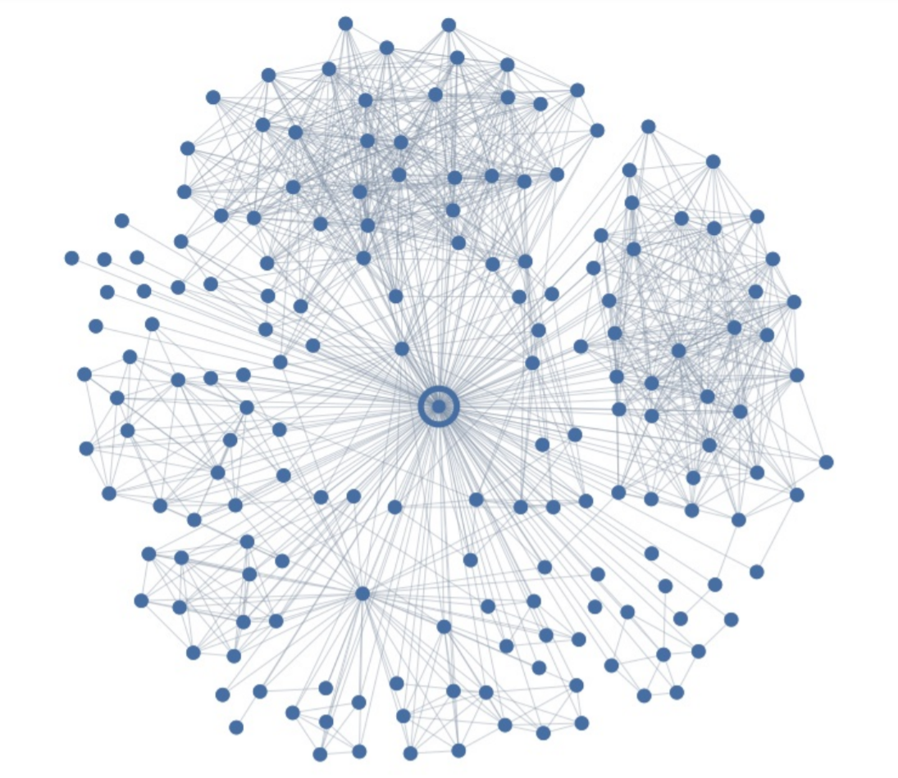

What and Why of Social Networks?
January 4, 2019
Social networks at their very fundamental level represent interconnections between various entities. While economists use social networks for understanding valuation sand ripple effects in markets, social media giants like Facebook use them to target specific audience for advertisements. Developments in the field dates back to early 1900s when the concept of social networks was introduced in fields like psychiatry and psychology as sociograms [1]. The growth in online community has given us new opportunities of understanding societies in ways never seen before. Thus it's quite natural that the field of social network analysis is getting the hype amongst computer and social scientists.
Social Networks as Graphs
Let us look at some of the graph-theoretic techniques applied to the global social networks and their effectiveness for understanding mass behaviors. To begin with let us see how graph theory comes naturally analogous to social networks. Say we have a graph G = (V,E) then the vertices in the graph are used to represent people and the edges show the relation among the subjects [2]. Since graphs are used to represents the networks, it is natural to tweak the properties of graphs such as connectedness and structure to explore the social relations and information propagation in the networks[3].
The above graph of a hypothetical social network shows several properties of a social network. One of the key observation in the above graph is the connected nodes (users on social media platform) versus the isolated ones. The connectedness of the graph gives rise to concept of components [2] and several applications include analyzing the size and growth of these components. On a social media platform the general observation is that the users with a bigger network are less likely to leave the platform compared to the ones that are isolates. So studying the dynamics of components is important for enhancing user growth on platforms.
To understand how social network analysis (SNA) results in user growth let us walk through one of the studies done by Backstrom and Kleinberg [4]. The study focused on predicting the romantic relations among the users. Backstrom and Kleinberg studied 1.3 million Facebook users who declared their spouse or relationship partner. Key structural features of graph edge were studied with main focus on embeddedness and dispersion. Embeddedness is the number of mutual friends of two users A and B such that edge (A,B) exists in the social graph. Dispersion being the measure such that high dispersion would mean that the neighbors of the users A and B are not strongly connected. If we take a look at the following graph [4] the dispersion phenomenon can easily be seen.

Salient features to note in the above figure are the two highly dense clusters of users at top and right side versus the sparse distribution of users in rest of the graph. The experiments used the embeddedness only and achieved an accuracy of 24.7%, indicating the value of structured information in the networks. Then the authors studied dispersion and achieved an accuracy between the range 68.2% - 71.6% for various subgroups of users such as married and engaged users. Understanding of dispersion in a network can help understand the consumption and production of content by a specific user by understanding different parts of their social neighborhoods. Then this understanding can lead to structuring those neighborhoods into specific structure to recommend engaging content to users [4].
Conclusion
Social networks are emerging at the interface of computer science and psychology. The idea of such networks is very trivial but embedding the ideas of social networks with graph theory and analytics we can analyze understand society from a completely different frame. The example of dispersion showed that the internal structure of graphs can tap into latent patterns which might not be obvious to humans. Social networks can be applied to understand mass behavior of voters to improve operations efficiency at large organizations. This article is meant to be a starting point for readers and aims to intrigue your curiosity towards more creative applications of social network analysis.
References
-
Chapter 1: Overview
Easley D., Kleinberg J., 2010. Networks, Crowds, and Markets: Reasoning about a Highly Connected World, pp. 1--8. Cambridge University Press, 2010. -
Social and Information Networks
[PDF]
Borodin A., 2019. Social and Information Networks, pp. 7--76. University of Toronto. -
Social and Economic Networks
Jackson M.O., 2018. Social and Economic Networks: Models and Analysis, Coursera Lecture 1.4. Stanford University. -
Romantic Partnerships and the Dispersion of Social Ties
Backstrom L., Kleinberg J., 2013. Romantic Partnerships and the Dispersion of Social Ties: A Network Analysis of Relationship Status on Facebook, pp. 1--8. ACM. Cite: arXiv:1310.6753v1
Corrections and Updates
If you found some errors or you think the information in the above article needs to be updated, please let me know. I will soon be adding the functionality to directly open the issue on github.